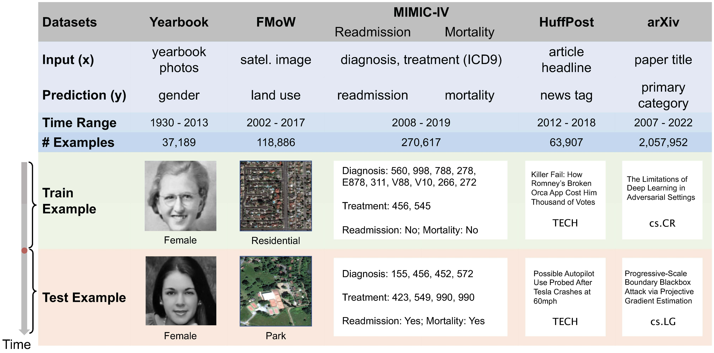

The Wild-Time package is an open-source Python package that provides a simple, standardized
interface for all datasets in the benchmark. It contains:
- Data loaders that automatically handle data downloading, processing, and splitting, and
- Dataset evaluators that standardize model evaluation for each dataset.
Installation
To use our code, you first need to install your own version of pytorch,
with version > 1.7.1.
Then, we recommend using pip to install Wild-Time by running pip install wildtime.
Using the Wild-Time package
We provide the following steps to use Wild-Time package
Import dependencies
To load the wildtime data, you first need to import the configs, which include parameters that
contain the imported dataset and will be discussed later.
import argparse
from configures import configures
configures = argparse.Namespace(**configs)
Load Wild-Time data
Then, you can use the following code to load the dataset:
from WildTime import dataloader
data = dataloader.getdata(configs)
Baseline Running
To train a baseline on a Wild-Time dataset and evaluate under Eval-Fix (default
evaluation),
use the code:
from WildTime import baseline_trainer
baseline_trainer.train(configs)
Specify parameters in the config as follows:
- Specify the dataset with
'dataset' in configs.
-
[arxiv, drug, fmow, huffpost, mimic, yearbook]
-
For MIMIC, specify one of two prediction tasks (mortality and
readmission) using
'prediction_type': 'mortality'
or
'prediction_type': 'readmission'.
- Specify the baseline with
'method'.
-
To run Eval-Fix, set
'offline': True.
-
Specify the ID/OOD split time step with
'split_time'.
- To run Eval-Stream, set
'eval_next_timesteps'.
- Set the number of training iterations with
'train_update_iters'.
- [Optional] If using a data directory or checkpoint directory other than
'./Data'
and './checkpoints',
specify their paths with '--data_dir' and '--log_dir'.
Datasets
Distribution shift occurs when the test distribution differs from the training
distribution, and it can considerably degrade performance of machine learning models
deployed in the real world. Temporal shifts - distribution shifts arising from the
passage of time – often occur gradually and have the additional structure of timestamp
metadata. By leveraging timestamp metadata, models can potentially learn from trends in
past distribution shifts and extrapolate into the future. While recent works
have studied distribution shifts, temporal shifts remain underexplored. To address this
gap, we curate Wild-Time, a benchmark of 5 datasets that reflect temporal
distribution shifts arising in a variety of real-world applications, including
patient prognosis and news classification. We use two evaluation strategies: evaluation
with a fixed time split (Eval-Fix) and evaluation with a data stream
(Eval-Stream).

We briefly introduce the dataset below. Please refer to our
paper for more detailed dataset descriptions
- Yearbook: Social norms, fashion styles, and population demographics change
over
time. This is captured in the Yearbook dataset, which consists of 37,921
frontal-facing American high
school yearbook photos. We exclude portraits from 1905 − 1929 due to the limited
number of
examples in these years, resulting in 33,431 examples from 1930−2013. Each photo is
a 32×32×1
grey-scale image associated with a binary label y, which represents the student’s
gender.
- FMoW: Machine learning models can be used to analyze satellite imagery and
aid humanitarian and policy efforts by monitoring croplands and predicting crop
yield
and poverty levels. Due to human activity, satellite imagery changes over time,
requiring models that are robust to temporal distribution shifts. We study this
problem on the Functional
Map of the World (FMoW) dataset, adapted from the WILDS benchmark. Given a satellite
image, the task is to predict the type of land
usage. The FMoW dataset consists of 141,696 examples from 2002 − 2017.
- MIMIC-IV: Many machine learning healthcare applications have emerged in the
last decade However, changes in healthcare over time,
such as the emergence of new treatments and changes in patient demographics, are an
obstacle in
deploying machine learning-based clinical decision support systems.
We study this problem on MIMIC-IV, one of the largest public healthcare datasets
that comprises
abundant medical records of over 40,000 patients. In MIMIC-IV, we treat each
admission as one
record, resulting in 216,487 healthcare records from 2008 − 2020. Specifically, we
consider two
classification tasks:
-
MIMIC-Readmission aims to predict the risk of being readmitted to the
hospital within 15 days.
-
MIMIC-Mortality aims to predict in-hospital mortality for each
patient.
- Huffpost: In many language models which deal with information correlated
with
time, temporal distribution shifts cause performance degradation in downstream tasks
such as Twitter
hashtag classification or question-answering systems. Performance drops across time
reflect
changes in the style or content of current events. We study this temporal shift on
the Huffpost dataset. The task is to identify tags of news articles
from their headlines. Each input feature x is a news headline, and the output y is
the news category
- arXiv: Due to the evolution of research fields, the style of arXiv
pre-prints also
changes over time, reflected by the change in article categories. For example,
“neural network attack"
was originally a popular keyword in the security community, but gradually became
more prevalent in
the machine learning community. We study this temporal shift in the arXiv dataset
[18], where the
task is to predict the primary category of arXiv pre-prints given the paper title as
input. The entire
dataset includes 172 pre-print categories from 2007 − 2022.
Overview
To submit, please read our submission guidelines.
Higher numbers are better for all metrics. In parentheses, we show corrected
sample standard deviations across random replicates.
An asterisk next to a value indicates that the entry deviates from the official
submission guidelines, for example because it uses a non-default model or additional pre-training data.
The deviations are described in the notes in the dataset-specific leaderboards.
This overall leaderboard show out-of-distribution test performance across all
datasets. For each dataset, we
bold the best-performing algorithm that conforms to official submission guidelines.
The leaderboard is only used for comparing the results under the Eval-Fix
setting.
Eval-Fix Evaluation
|
Yearbook (Acc) |
FMoW (Acc) |
MIMIC-Readmission (Acc) |
MIMIC-Mortality (AUC) |
Huffpost (Acc) |
arXiv (Acc) |
Contact |
References |
|
Avg. |
Worst |
Avg. |
Worst |
Avg |
Worst |
Avg |
Worst |
Avg |
Worst |
Avg |
Worst |
| Fine-tuning |
81.98 (1.52) |
69.62 (3.38) |
45.77 (0.53) |
43.21 (0.85) |
48.84 (4.25) |
44.62 (4.92) |
71.71 (5.03) |
62.34 (7.82) |
69.59 (0.10) |
68.91 (0.49) |
50.31 (0.39) |
48.19 (0.41) |
Wild-Time |
Paper/Code |
| EWC |
80.07 (0.22) |
66.61 (1.95) |
45.60 (0.28) |
43.13 (0.50) |
51.41 (1.62) |
47.24 (2.28) |
69.04 (2.03) |
58.89 (2.08) |
69.42 (1.00) |
68.61 (0.98) |
50.40 (0.11) |
48.18 (0.18) |
Wild-Time |
Paper/Code |
| SI |
78.70 (3.78) |
65.18 (2.44) |
44.87 (0.73) |
42.97 (1.15) |
43.43 (7.34) |
37.01 (11.43) |
66.47 (1.56) |
55.49 (1.31) |
70.46 (0.27) |
69.05 (0.52) |
50.21 (0.40) |
48.07 (0.48) |
Wild-Time |
Paper/Code |
| A-GEM |
81.04 (1.40) |
67.07 (2.23) |
45.21 (0.20) |
42.49 (0.70) |
55.55 (22.0) |
53.74 (20.4) |
60.47 (0.28) |
50.00 (0.00) |
70.22 (0.50) |
69.15 (0.88) |
50.30 (0.37) |
48.14 (0.40) |
Wild-Time |
Paper/Code |
| ERM |
79.50 (6.23) |
63.09 (5.15) |
51.99 (0.37) |
48.79 (0.49) |
58.51 (4.06) |
55.84 (4.42) |
69.74 (4.51) |
59.43 (6.85) |
70.42 (1.15) |
68.71 (1.36) |
45.94 (0.97) |
44.09 (1.05) |
Wild-Time |
Paper/Code |
| GroupDRO |
77.06 (1.67) |
60.96 (1.83) |
37.61 (1.16) |
34.41 (1.39) |
66.91 (0.91) |
65.68 (1.32) |
73.06 (2.32) |
65.52 (3.74) |
69.53 (0.54) |
67.68 (0.78) |
39.06 (0.54) |
37.18 (0.52) |
Wild-Time |
Paper/Code |
| mixup |
76.72 (1.35) |
58.70 (1.36) |
49.82 (0.19) |
45.58 (0.31) |
65.62 (3.57) |
63.90 (3.61) |
64.09 (1.39) |
52.44 (1.95) |
71.18 (1.17) |
68.89 (0.38) |
45.12 (0.71) |
43.23 (0.75) |
Wild-Time |
Paper/Code |
| LISA |
83.65 (4.61) |
68.53 (5.79) |
48.76 (0.48) |
45.41 (0.21) |
55.99 (2.89) |
53.73 (2.67) |
78.11 (0.93) |
71.69 (1.93) |
69.99 (0.60) |
68.04 (0.75) |
47.82 (0.47) |
45.91 (0.42) |
Wild-Time |
Paper/Code |
| CORAL |
77.53 (2.15) |
59.34 (1.46) |
47.34 (0.09) |
44.04 (0.46) |
64.50 (3.03) |
61.97 (3.38) |
70.81 (3.22) |
62.19 (4.63) |
70.05 (0.63) |
68.39 (0.88) |
42.32 (0.60) |
40.31 (0.61) |
Wild-Time |
Paper/Code |
| IRM |
80.46 (3.53) |
64.42 (4.38) |
38.73 (1.67) |
34.93 (1.88) |
59.67 (2.19) |
56.73 (1.82) |
67.02 (4.37) |
57.08 (5.81) |
70.21 (1.05) |
68.71 (1.13) |
35.75 (0.90) |
33.91 (1.09) |
Wild-Time |
Paper/Code |
| SimCLR |
78.59 (2.72) |
60.15 (3.48) |
42.91 (0.40) |
39.54 (0.67) |
- |
- |
- |
- |
- |
- |
- |
- |
Wild-Time |
Paper/Code |
| SwaV |
78.38 (1.86) |
60.73 (1.08) |
49.53 (0.27) |
46.31 (0.58) |
- |
- |
- |
- |
- |
- |
- |
- |
Wild-Time |
Paper/Code |
| SWA |
84.25 (3.06) |
67.90 (4.34) |
50.59 (0.46) |
47.15 (0.92) |
41.89 (1.46) |
32.86 (2.81) |
63.60 (5.09) |
54.58 (7.94) |
70.98 (0.05) |
69.52 (0.10) |
44.36 (0.77) |
42.54 (0.68) |
Wild-Time |
Paper/Code |